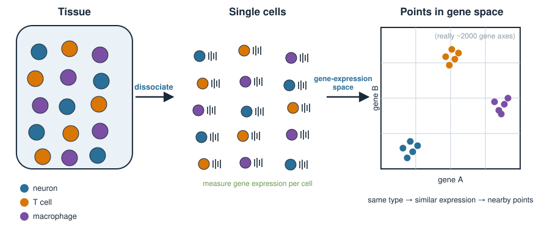
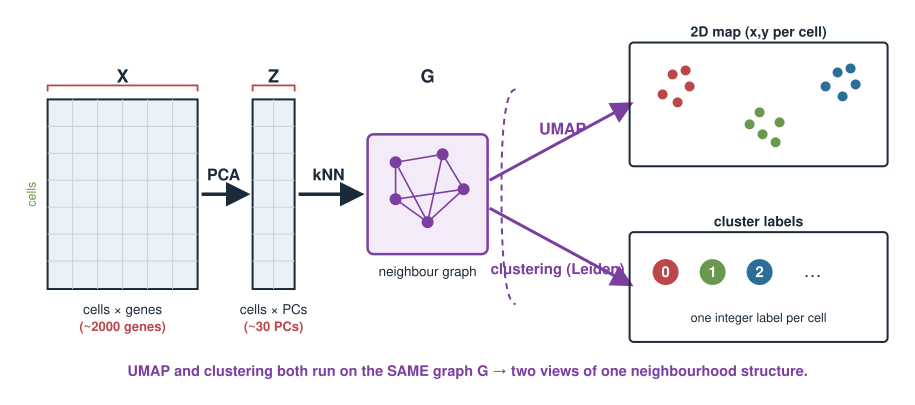
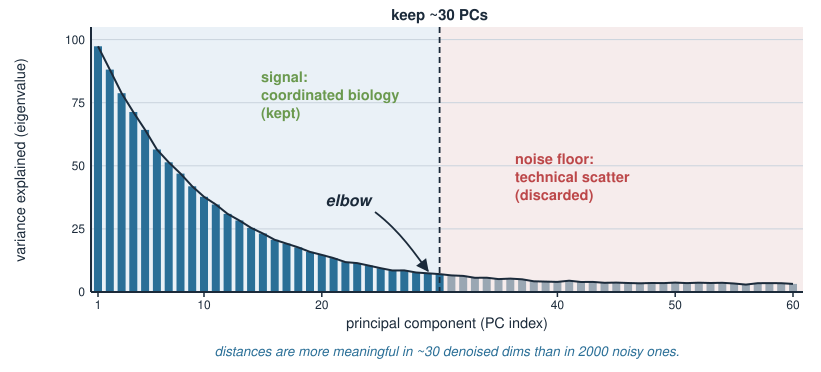
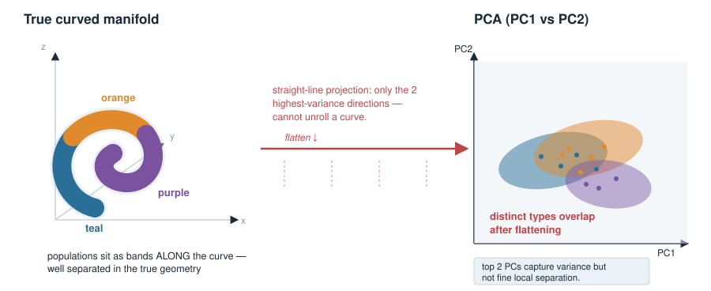
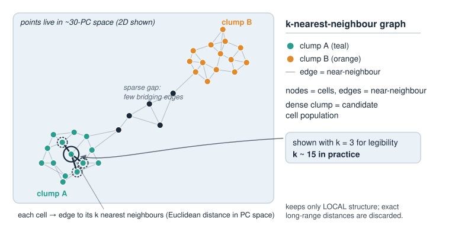
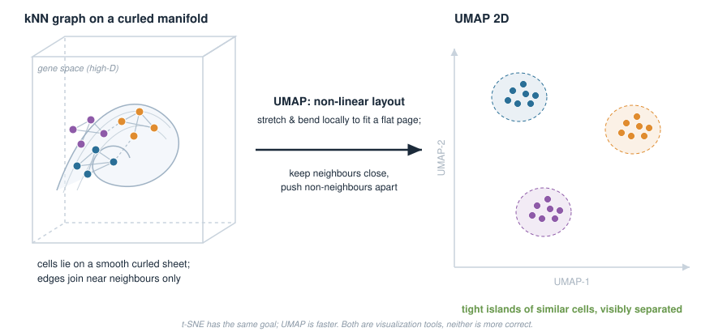
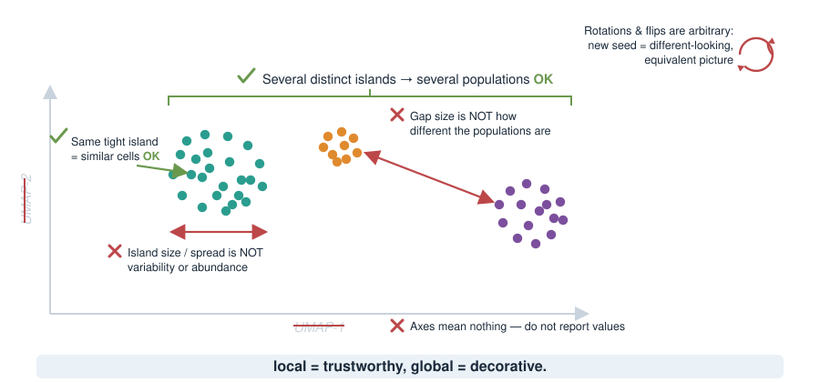
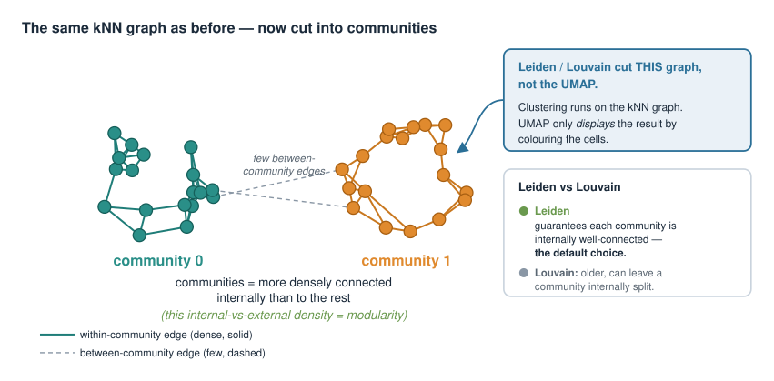
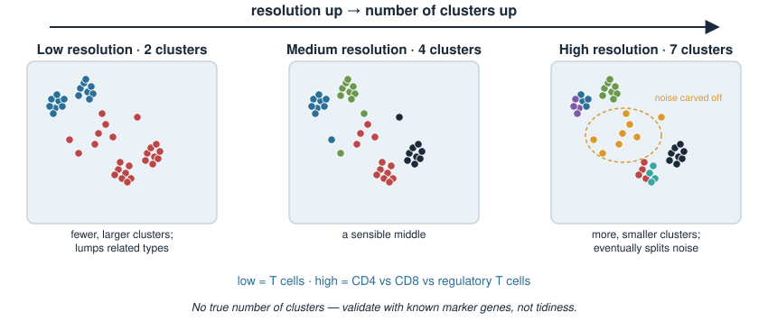
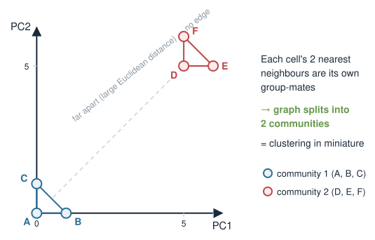

In Single-cell RNA-seq: data & QC and Log and pseudolog transforms you turned raw droplets into a clean matrix: ~2000 genes × thousands of cells, QC-filtered, normalized and log-transformed. Today we turn that matrix into a map of cells — a picture you can actually look at, with cell groups marked on it.
Reduce & denoise first with PCA — reuse the machinery from Principal component analysis and PCA in R.
Build a k-nearest-neighbour (kNN) graph: who sits next to whom in gene-expression space.
Lay the graph out in 2D with UMAP — a non-linear map that preserves local neighbourhoods (contrast the linear PCA).
Find cell groups with graph-based clustering (Louvain / Leiden).
Caveats: UMAP axes and distances are not quantitative, the resolution parameter changes how many clusters you get, and none of this is ground truth.
This is an applied concept day. The pipeline is short; the discipline is in reading the output honestly.
The biology: what is a cell type?
A tissue is a mixture of cell types — neurons, T cells, macrophages, fibroblasts — each running its own programme of active genes.
Single-cell RNA-seq measures, for every cell, how much of each gene is expressed.
Cells of the same type express similar sets of genes → they sit close together in gene-expression space.
Cells of different types sit far apart.
The biological question is simple to state: how many cell populations are in this sample, and which cells belong to which?
We never told the computer the cell types. We want to discover them from the expression alone — this is unsupervised learning, exactly like PCA.

Each cell is a point in gene space
Stack the normalized data as a matrix: rows = cells, columns = genes.
Notice: UMAP and clustering both run on the same kNN graph. They are two views of one neighbourhood structure.

Step 1: PCA to denoise and reduce
Before anything else, run PCA on the (scaled) cell × gene matrix — the exact method from Principal component analysis and PCA in R.
The first ~30–50 principal components capture the coordinated variation across genes (real biology: shared expression programmes).
The discarded components are dominated by technical noise and gene-by-gene sampling scatter.
We keep the top PCs and work in that space from now on: cells × 30, not cells × 2000.
Why this matters for what follows:
Distances are more meaningful in ~30 denoised dimensions than in 2000 noisy ones.
Everything downstream (kNN, UMAP, clustering) is faster and more stable.
Choosing how many PCs is the elbow / scree decision from Choosing components & pitfalls.

Why PCA alone is not the picture
PCA already gives coordinates — why not just plot PC1 vs PC2?
PCA is linear: every PC is a straight-line (weighted-sum) combination of genes. PC1 vs PC2 shows only the two directions of greatest variance.
Real cell populations lie on curved, branched structures (differentiation trajectories, discrete islands). A linear projection flattens them — distinct types overlap.
The top 2 PCs capture a lot of variance but usually not the fine local separation between similar cell types.
We used ~30 PCs precisely because 2 are not enough. But we can only plot 2 dimensions.
Need: a map that uses all 30 PCs’ worth of neighbourhood information but draws it in 2D, and is allowed to bend. That is a non-linear embedding — UMAP.

Step 2: the k-nearest-neighbour graph
Work in the ~30-PC space. For each cell, find its \(k\) nearest neighbours (typical \(k \approx 15\)) by Euclidean distance, and draw an edge to each.
The result is a graph\(G\): nodes = cells, edges = “is a near neighbour of”.
It records only local relationships — who is close to whom — and throws away exact long-range distances.
Densely connected clumps of cells = candidate cell populations.
This graph is the shared input to both UMAP and clustering.

Step 3: UMAP lays the graph out in 2D
UMAP = Uniform Manifold Approximation and Projection. Input: the kNN graph. Output: an \((x, y)\) coordinate for every cell.
The idea (no formulas today):
Assume the cells lie on a smooth low-dimensional manifold curled up inside gene space.
Find 2D coordinates so that cells that are neighbours in the graph stay close in the plot, and non-neighbours are pushed apart. There is no formula from genes to \((x, y)\): each cell’s position is optimised directly (springs between neighbours + repulsion).
It is non-linear: it may stretch and bend the space differently in different regions to make local neighbourhoods fit on a flat page.
The result: tight islands of similar cells, visibly separated — the canonical single-cell figure.
t-SNE is an older method with the same goal; UMAP is faster and is now the default. Neither is “more correct” — both are visualization tools.

Try it: watch UMAP lay out the graph
UMAP vs PCA: two different jobs
PCA
UMAP
Mapping
linear (rotation / projection)
non-linear (bends locally)
Preserves
global variance directions
local neighbourhoods
Axes mean
variance (PC1 = most variance)
nothing interpretable
Distances
meaningful (in PC space)
not quantitative
Reversible
yes (loadings map back to genes)
no
Used here for
denoising / reduction
visualization only
They are complementary, not competitors: we run PCA then UMAP. PCA cleans and compresses; UMAP draws.
Reading a UMAP honestly
What you may read off a UMAP:
Cells that fall in the same tight island are similar to each other. ✔
The presence of several distinct islands suggests several cell populations. ✔
What you may not read off a UMAP:
The distance between two islands is not how different those populations are. ✘
The size/spread of an island is not how variable or abundant that population is. ✘
The axes (UMAP-1, UMAP-2) mean nothing — do not report values. ✘
Rotations / flips are arbitrary; re-running with a new seed gives a different-looking (but equivalent) picture. ✘
Rule of thumb: local = trustworthy, global = decorative.

Step 4: graph-based clustering
To name the cell groups we cut the same kNN graph into communities — sets of cells more densely connected to each other than to the rest.
Louvain and Leiden are community-detection algorithms: they group nodes to maximize a modularity-style score (more within-group edges than expected by chance).
Leiden is a refinement of Louvain that guarantees the communities are internally well-connected; it is now the default.
Each community becomes a cluster = a candidate cell population, given an arbitrary label (0, 1, 2, …).
Crucially: clustering runs on the graph, not on the UMAP coordinates. The UMAP is only how we display the clusters, by colouring each cell.

The resolution parameter
Community detection has a knob: resolution. It sets how fine-grained the partition is.
Low resolution → fewer, larger clusters (lumps related types together).
High resolution → more, smaller clusters (splits fine subtypes — and eventually splits noise).
\[
\text{resolution} \uparrow \quad\Longrightarrow\quad \text{number of clusters} \uparrow
\]
There is no single correct value and no true number of clusters. The “right” resolution depends on the biological question — do you want T cells, or CD4 vs CD8 vs regulatory T cells?
Good practice: try a range of resolutions, and judge clusters by known marker genes, not by which value looks tidiest.

Try it: Leiden clustering and the resolution
The whole workflow in R (Seurat)
Assume seu is the QC-ed, normalized object from the preprocessing unit.
library(Seurat)# 1. Scale, then PCA (denoise + reduce): reuse the PCA machineryseu <-ScaleData(seu)seu <-RunPCA(seu, npcs =50)ElbowPlot(seu) # scree/elbow: how many PCs to keep?# 2. kNN graph on the top 30 PCs (Euclidean distance in PC space)seu <-FindNeighbors(seu, dims =1:30, k.param =15)# 3. Graph-based clustering (Leiden/Louvain) at a chosen resolutionseu <-FindClusters(seu, resolution =0.5)# 4. UMAP layout from the SAME 30 PCs, for display onlyseu <-RunUMAP(seu, dims =1:30)# 5. Plot: UMAP coloured by cluster labelDimPlot(seu, reduction ="umap", label =TRUE)
Five function calls map exactly onto the four pipeline steps. No package is installed here — read this as a recipe, not runnable code.
Peeking under the hood: kNN by hand in R
The Seurat calls are black boxes. Here is the kNN step on a toy PC matrix, in base R, so you can see there is no magic.
# six cells, each already reduced to 2 PCsZ <-rbind(A =c(0, 0), B =c(1, 0), C =c(0, 1), # group 1 (near origin)D =c(5, 5), E =c(6, 5), F =c(5, 6)) # group 2 (near (5,5))D2 <-as.matrix(dist(Z)) # all pairwise Euclidean distancesround(D2, 2)# the 2 nearest neighbours of each cell (column 1 is the cell itself)apply(D2, 1, function(col) names(sort(col))[2:3])
Each cell’s two nearest neighbours are the other two members of its own group — the graph splits cleanly into two communities. That is clustering in miniature.

Caveats: do not over-interpret
Everything today is exploratory. It generates hypotheses; it does not test them.
UMAP is a cartoon. Local grouping is meaningful; axes, gaps, and island sizes are not.
Clusters are not ground truth. They depend on: which genes you kept, how many PCs, \(k\), the resolution, and the random seed.
The number of clusters is a choice, not a discovery. Validate against known marker genes, not visual tidiness.
A cluster is not yet a cell type. Assigning identities comes next, in cell-type annotation.
Reproducibility: fix and report the seed and every parameter, or your figure cannot be reproduced.
Honest single-cell analysis = the pipeline plus the disclaimers.
Summary
Step
Method
Linear?
Output
Trust it for
Reduce & denoise
PCA
linear
~30 PCs
distances, variance
Local structure
kNN graph
—
neighbour graph
who-is-near-whom
Visualize
UMAP
non-linear
2D coordinates
local grouping only
Group cells
Louvain / Leiden
—
cluster labels
candidate populations
PCA denoises; UMAP draws; clustering groups. UMAP and clustering share the kNN graph.
UMAP axes and distances are not quantitative. Local is trustworthy, global is decorative.
Resolution sets the cluster count — there is no true number of clusters.
Next (cell-type annotation): turn anonymous clusters 0, 1, 2 … into named cell types using marker genes. Later, cell-cycle analysis revisits PCA to remove an unwanted source of variation.